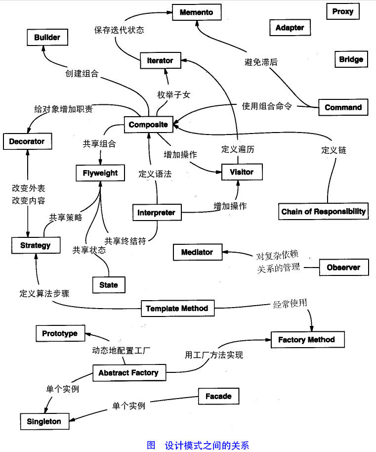

【Design Patterns】23种设计模式概述
设计模式
设计模式的分类
创建型模式(5种)
- 工厂方法模式
- 抽象工厂模式
- 建造者模式
- 单例模式
- 原型模式
结构型模式(7种)
- 适配器模式
- 装饰器模式
- 代理模式
- 外观模式
- 桥接模式
- 组合模式
- 享元模式
行为模式(11种)
- 模板方法模式
- 观察者模式
- 迭代子模式
- 责任链模式
- 备忘录模式
- 访问者模式
- 中介者模式
- 解释器模式
- 策略模式
- 命令模式
- 状态模式
下图表示整体关系：

各种模式中的关键点
|
|
设计模式遵循的6个原则
1. 开闭原则（Open Close Principle）
对拓展开放，对修改关闭
2. 里氏代换原则（Liskov Substitution Principle）
- 里氏代换原则(Liskov Substitution Principle LSP)中说，任何基类可以出现的地方，子类一定可以出现
- 只有当衍生类可以替换掉基类，软件单位的功能不受到影响时，基类才能真正被复用，而衍生类也能够在基类的基础上增加新的行为。
- 里氏代换原则是对“开-闭”原则的补充。实现“开-闭”原则的关键步骤就是抽象化。
3. 依赖倒转原则（Dependence Inversion Principle）
对接口编程，依赖于抽象而不依赖于具体。
4. 接口隔离原则（Interface Segregation Principle）
使用多个隔离的接口，比使用单个接口要好(降低耦合度)。
5. 迪米特法则（最少知道原则）（Demeter Principle）
一个实体应当尽量少的与其他实体之间发生相互作用，使得系统功能模块相对独立。
6. 合成复用原则（Composite Reuse Principle）
原则是尽量使用合成/聚合的方式，而不是使用继承。
继承实际上破坏了类的封装性，超类的方法可能会被子类修改。